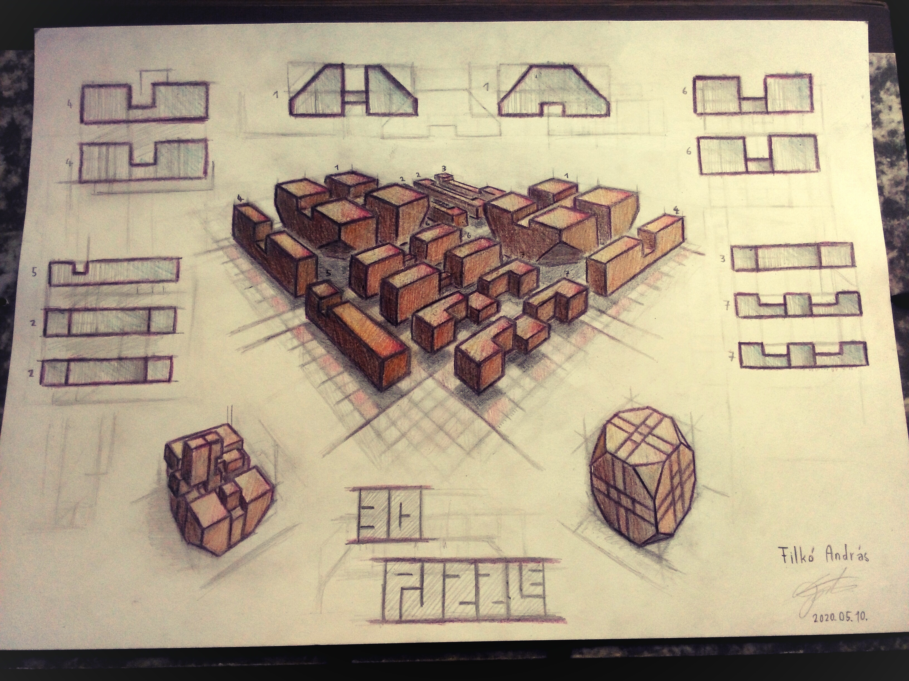
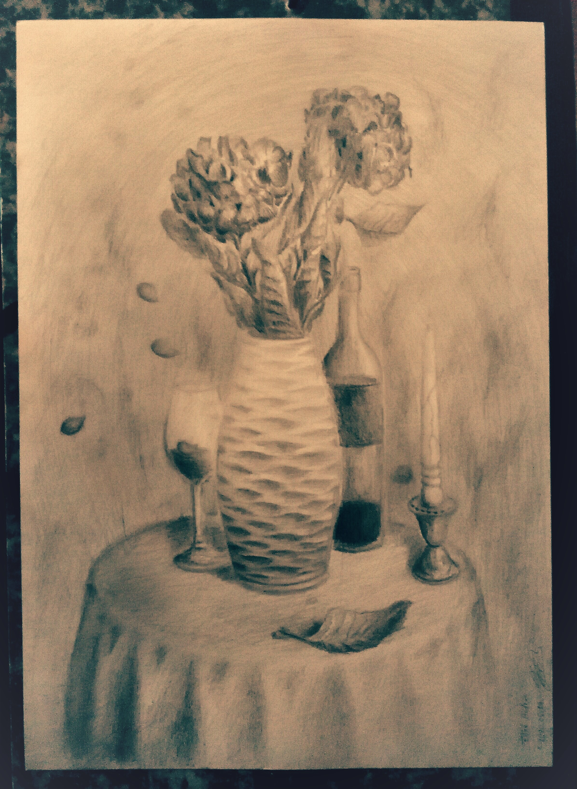

alkalmassági vizsga 1

alkalmassági vizsga 2

Logótervek: A logó egy fiktív papír írószer bolthoz készült
"Mivel a csapatunkkal egy papír-írószer cég megalapítása mellett döntöttünk, melyhez alapjában véve köthető a sokszínűség és a kreativitás, olyan csoportnevet igyekeztünk kitalálni, ami jó alapot fog nyújtani egy sokoldalú logó megtervezéséhez. Miután a monogramjaink, illetve a témához köthető szavak szójátékából sem sikerült kellően hangzatos nevet megalkotni, úgy döntöttünk fajok tudományos nevéből fogunk kiindulni. Ezek rendelkeznek egy bizonyos eleganciával, és a latin a legtöbb európai nemzetiség számára ismerősen cseng. Továbbá vizuálisan is megjeleníthetőek egy logóban az élőlények, illetve a cég kabalájává is válhatnak, ami a fiatalabb korosztály megcélzásában játszik fő szerepet.
A fejlábúak között kutattunk, ugyanis ezek többsége rendelkezik tintával, ami köthető a témánkhoz, és a mélytengerek világa fokozza a kíváncsiságot. "